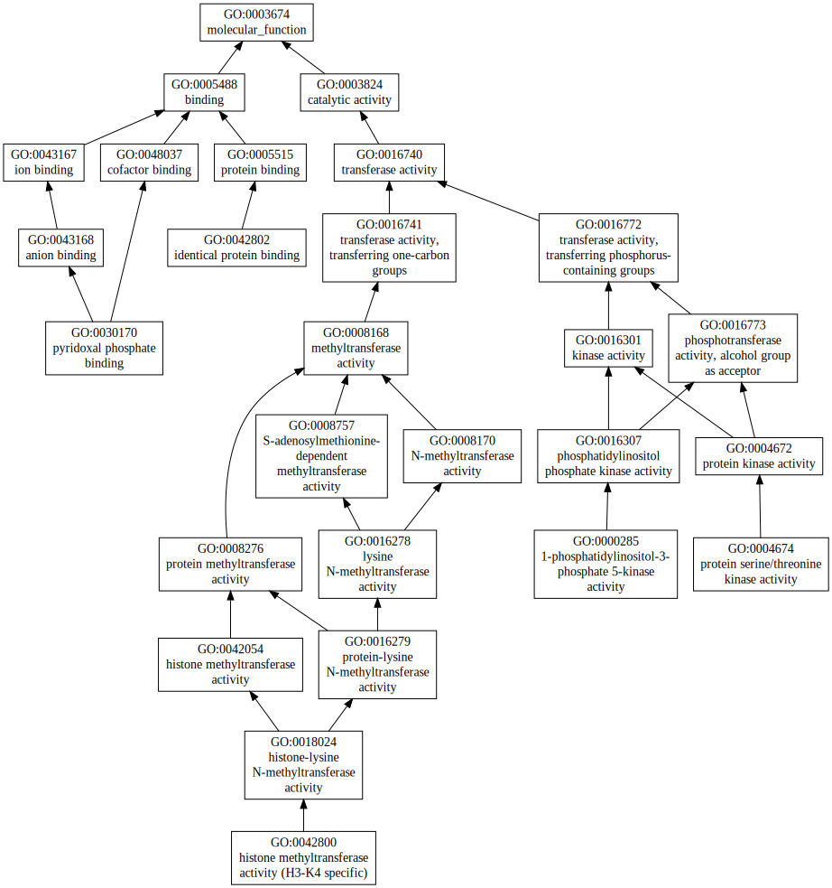
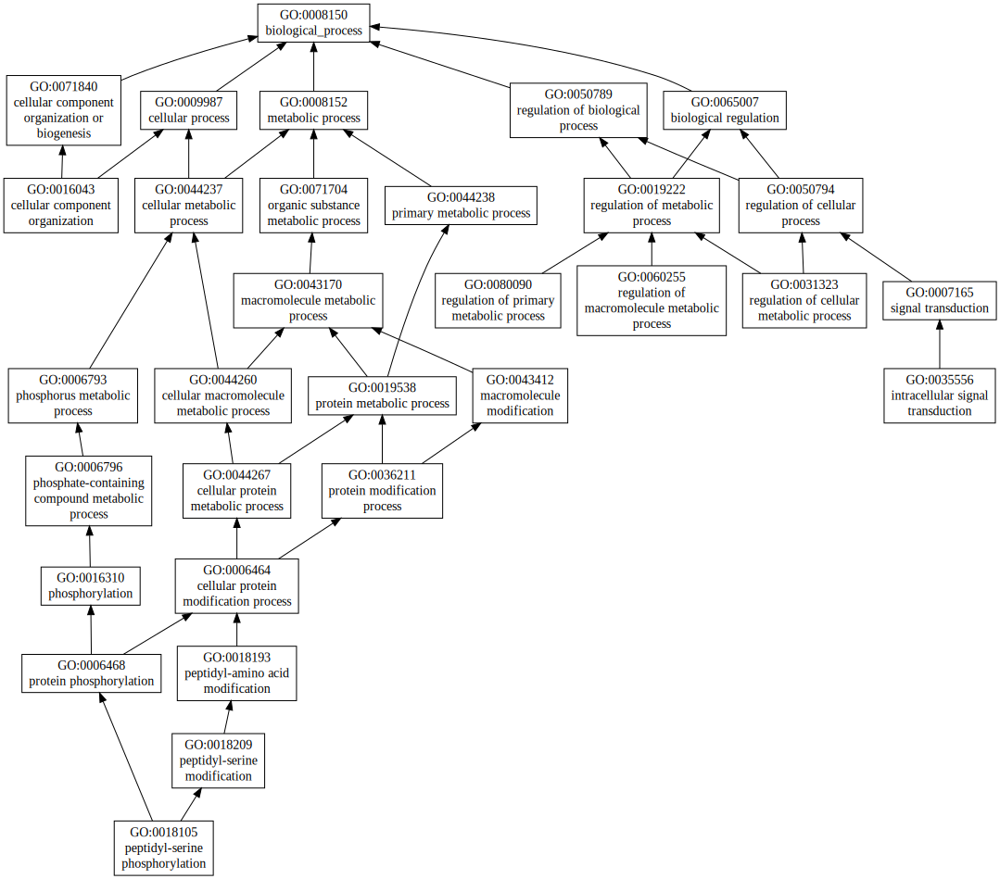
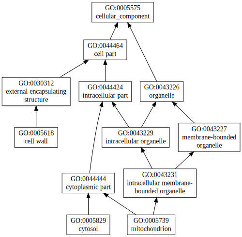

|

|
| GO term | CscoreGO | Name |
| GO:0016740 | 0.07 | transferase activity |
| GO:0016773 | 0.03 | phosphotransferase activity, alcohol group as acceptor |
| GO:0016301 | 0.03 | kinase activity |
| GO:0004674 | 0.02 | protein serine/threonine kinase activity |
| GO:0042802 | 0.01 | identical protein binding |
| GO:0042800 | 0.01 | histone methyltransferase activity (H3-K4 specific) |
| GO:0030170 | 0.01 | pyridoxal phosphate binding |
| GO:0000285 | 0.01 | 1-phosphatidylinositol-3-phosphate 5-kinase activity |
| Download full result of the above consensus prediction. |
| Click the graph to show a high resolution version. |
| (a) | CscoreGO is the confidence score of predicted GO terms. CscoreGO values range in between [0-1]; where a higher value indicates a better confidence in predicting the function using the template. |
| (b) | The graph shows the predicted terms within the Gene Ontology hierachy for Molecular Function. Confidently predicted terms are color coded by CscoreGO: |
| | [0.13,0.5) | [0.5,0.6) | [0.6,0.7) | [0.7,0.8) | [0.8,0.9) | [0.9,1.0] |
|
|
|

|
| GO term | CscoreGO | Name |
| GO:0009987 | 0.06 | cellular process |
| GO:0018193 | 0.05 | peptidyl-amino acid modification |
| GO:0050794 | 0.04 | regulation of cellular process |
| GO:0071840 | 0.03 | cellular component organization or biogenesis |
| GO:0080090 | 0.02 | regulation of primary metabolic process |
| GO:0060255 | 0.02 | regulation of macromolecule metabolic process |
| GO:0035556 | 0.02 | intracellular signal transduction |
| GO:0031323 | 0.02 | regulation of cellular metabolic process |
| GO:0018105 | 0.02 | peptidyl-serine phosphorylation |
| GO:0016043 | 0.02 | cellular component organization |
| Download full result of the above consensus prediction. |
| Click the graph to show a high resolution version. |
| (a) | CscoreGO is the confidence score of predicted GO terms. CscoreGO values range in between [0-1]; where a higher value indicates a better confidence in predicting the function using the template. |
| (b) | The graph shows the predicted terms within the Gene Ontology hierachy for Biological Process. Confidently predicted terms are color coded by CscoreGO: |
| | [0.08,0.5) | [0.5,0.6) | [0.6,0.7) | [0.7,0.8) | [0.8,0.9) | [0.9,1.0] |
|
|
|

|
| Download full result of the above consensus prediction. |
| Click the graph to show a high resolution version. |
| (a) | CscoreGO is the confidence score of predicted GO terms. CscoreGO values range in between [0-1]; where a higher value indicates a better confidence in predicting the function using the template. |
| (b) | The graph shows the predicted terms within the Gene Ontology hierachy for Cellular Component. Confidently predicted terms are color coded by CscoreGO: |
| | [0.14,0.5) | [0.5,0.6) | [0.6,0.7) | [0.7,0.8) | [0.8,0.9) | [0.9,1.0] |
|
|
|